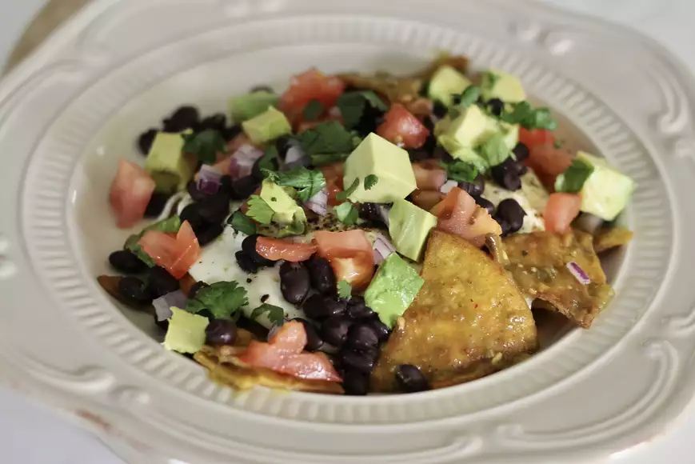

Chilaquiles Verdes

Chilaquiles is the perfect way to repurpose leftover tortillas.
Served with eggs, avocado, black beans, and a salsa verde, it makes for a satisfying breakfast or lunch!
Ingredients
- 8 (7 inch) corn tortillas
- 2 tablespoons avocado oil, divided
- ½ teaspoon sea salt
- 2 cups salsa verde
- 2 cups black beans, cooked and drained
- 4 large eggs
- salt and freshly ground black pepper to taste
- 1 large avocado - peeled, pitted, and cubed
- 2 medium tomatoes, diced
- ½ small red onion, diced
- ¼ cup chopped fresh cilantro, or to taste